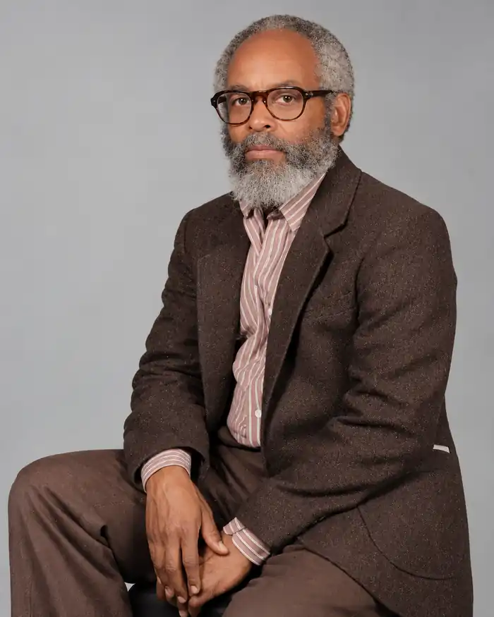

First archival pilot
Black Filmmakers
Hall of Fame
Photographs documenting the people and events of a landmark Oakland cultural institution. A one-year subcollection is being prepared for digitization and research.
The Jacob Blanchette Jr. Photography Archive
Preserving the photographs and history of Jacob Blanchette Jr., whose work offers a view of Oakland's cultural and community life.
A developing collection · Photographs and research are being added.

JB-000001 · AI-enhanced portrait derived from a phone photograph of a print. Compare original capture.
Explore the photographs
First archival pilot
Photographs documenting the people and events of a landmark Oakland cultural institution. A one-year subcollection is being prepared for digitization and research.
The photographer
Jacob Blanchette Jr. photographed portraits, gatherings, and public events, leaving a collection that reaches across Oakland's arts and civic life. Alongside the photographs, this archive seeks to preserve the stories and circumstances that give them meaning.
The work begins with original prints, negatives, and documentary materials and grows through careful identification and historical research.
Read the working biography →A living research project
Identifying a person, placing an event, or tracing an original envelope can help restore historical context. This archive distinguishes confirmed information from questions still being investigated.
About the archival project →